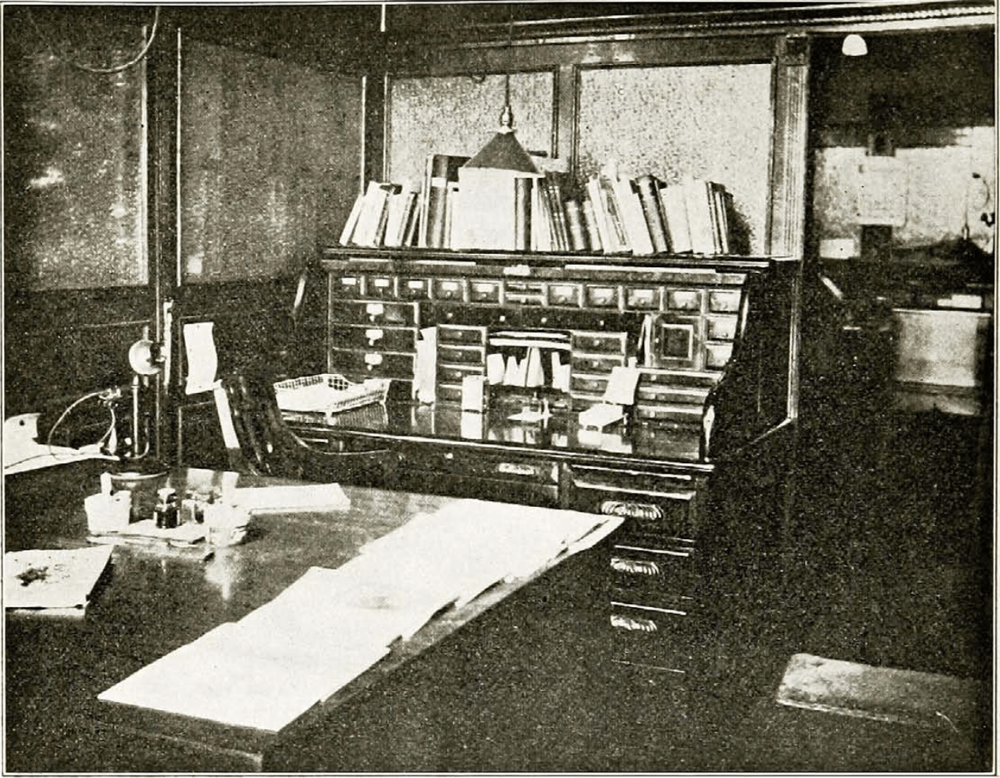
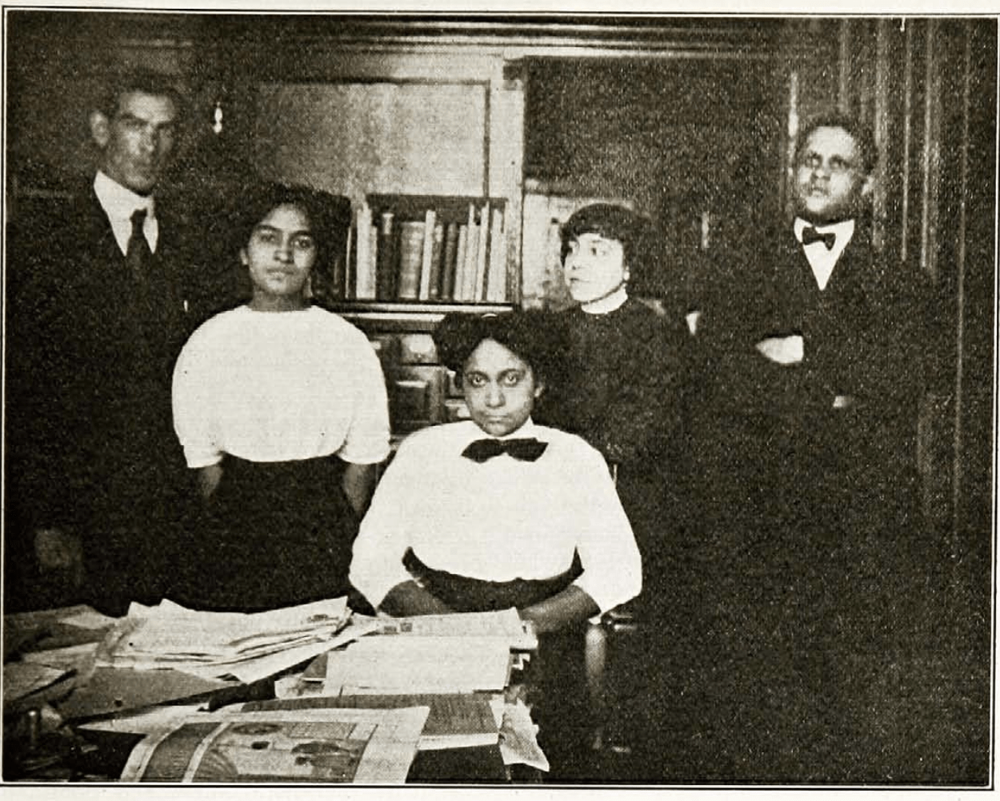
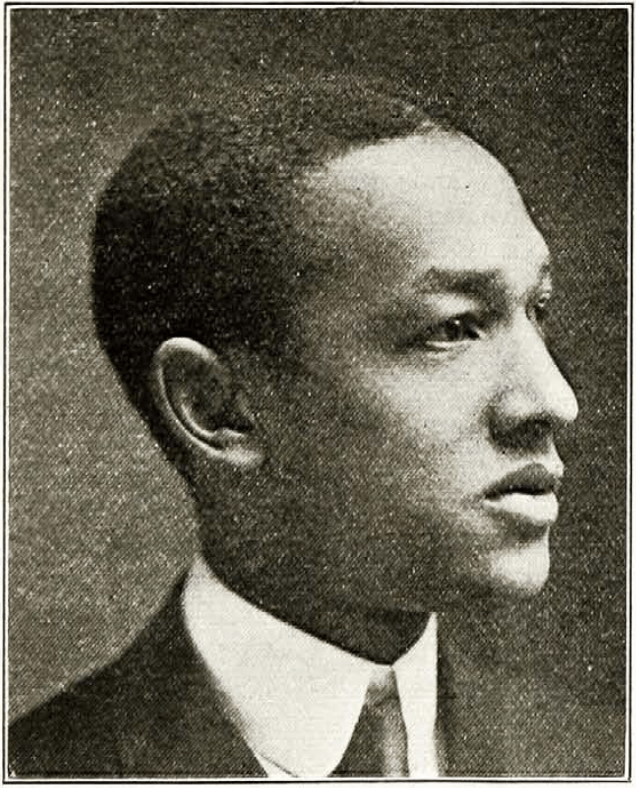

The Colored Magazine in America
The first colored magazine in America seems to have been The African Methodist Episcopal Church Magazine, edited by Dr. Hogarth, general book steward, and published in Brooklyn, in October, 1841. This magazine was in a sense the ancestor of The Crisis. Its editor seems to have been a native of Haiti, although little is known of his life and work. The prospectus of the magazine says: “In embarking upon this laudable enterprise it becomes our duty, in the onset, to inform our friends that such a work cannot be concluded with dignity and honor to our people unless it meets with ample supply of pecuniary and intellectual means. A fear of failure in obtaining these important contingencies had, in a great measure, prevented our brethren in their deliberations from coming to any conclusions on this important subject. But, judging from the present aspect of things, that the times have greatly changed in our favor as a people, light has burst forth upon us, intelligence in a great measure is taking the place of ignorance, especially among the younger portions of our people, opening the avenues to proper Christian feeling and benevolence—our brethren, from those important considerations, came to the conclusion, at our last New York annual conference, held in June, in the city of Brooklyn, to order such a work and lay it before the public for their patronage.” This magazine lasted two or three years. Its publication was then stopped.
After an interval of forty years Bishop B. T. Tanner began the publication of the A. M. E. Church Review Quarterly. This has been published as a quarterly magazine from 1855 down to to-day and is now receiving new life from its recently elected editor, Dr. R. C. Ransom. The first number of the Review says editorially: “My church, the African Methodist Episcopal, at its recent quadrennial session in Baltimore, concluded to have not only a weekly paper, but a Review, for the present quarterly, but intended to be bi-monthly, with the management of which it honored me. I have, therefore, gentlemen, to ask at your hands the same friendly consideration you so generously accorded me when editor of the Christian Recorder. Grant an exchange. Speak a word—when merited. What we present is unique in the world of letters. If you think so, advise the thoughtful of your readers to subscribe for it.”
A quarterly magazine, however, did not quite fill the bill, and in the years from 1845 to the present there have been a number of other adventures. There was, for instance, The Repository of Religion and Literature, published in Indianapolis and afterward in Baltimore for several years. In later days the Colored American Magazine, started by a colored man who put the savings of his life from days’ labor into it, was first issued in Boston in 1900, and rapidly attained a wide circulation. At its zenith it distributed 15,000 copies. Then, however, its troubles began. It was at one time sold for debt, but Colonel William H. Dupree rescued it, and it seemed about to take on new life when further difficulties occurred. It was suggested to the editor, who was then Miss Pauline Hopkins, that her attitude was not conciliatory enough. As a white friend said: “If you are going to take up the wrongs of your race then you must depend for support absolutely upon your race. For the colored man to-day to attempt to stand up to fight would be like a canary bird facing a bulldog, and an angry one at that.” The final result was that the magazine was bought by friends favorable to the conciliatory attitude, and transferred to New York, where it became so conciliatory, innocuous and uninteresting that it died a peaceful death almost unnoticed by the public.
Meantime, a firm of subscription-book printers, then known as the J.L. Nichols Company, conceived an idea suggested to it by one of its agents of publishing a colored magazine in the South. The Voice of the Negro appeared in January, 1904, and a young man then just out of college, Mr. J. Max Barber, was made its editor. The Voice of the Negro proved the greatest magazine which the colored people had. It reached a circulation of 15,000, and at one time printed 17,000 copies. It was a magazine of fifty-five pages of reading matter, was illustrated and well edited. The whole story of its final failure has not been written, and perhaps ought not to be for some years to come. Suffice it to say that the fault did not lie with Mr. Barber. The editorial work was well done. The business side, on the other hand, under a succession of men, was not as well attended to; nevertheless, it was not a failure, and the magazine might still be alive had it not been for sinister influences within and without the race that wished either to control or kill it; and finally, had it not been for the Atlanta riot. Mr. Barber found himself continually hampered by interests which were determined to edit his magazine for him. When he asserted his independence these interests appealed to the firm which was backing him and finally so impressed them that they determined to undo the proposition on a new corporation. Stock in the corporation sold slowly, but it was beginning to sell when the instigators of the Atlanta riot drove Mr. Barber from the city. Removing to Chicago, Mr. Barber found himself facing the task of re-establishing his magazine with practically no capital. He made a brave effort, but finally had to give up and The Voice of the Negro ceased publication. Its successor is The Crisis, and it looks as though this latest candidate for popular favor was going to be permanently successful.

The Crisis Sanctum Sanctorum”
Since then The Crisis represents so interesting a series of magazines, perhaps a word should be said for its force and dwelling place. As one rides down Broadway, New York, past the tallest building in the world, one comes to the old postoffice on City Hall Park and Park Row, the center of newspaperdom. Vesey Street is the westward extension of Park Row across Broadway. There, opposite the moss-grown graves of St. Paul’s churchyard, rises a brownstone building of the older office design. You come up a long flight of stairs and enter our rooms.
The big library and workroom greets you first. From this you pass by the agents and subscription clerks to the two editorial offices or to the offices of the secretary of the National Association for the Advancement of Colored People and her assistant. Turning the other way you find the cashier in his den and the advertising man, and finally the store and mailing room with their periodicals and machine. The present force of The Crisis consists of an editor, three clerks, a bookkeeper and advertising man, four unpaid editorial assistants and 489 agents in the field.

The Crisis Business Force—Messrs. Turner and Holsey; Misses Allison, Jarvis and Sousa
Many persons do not understand the relation of The Crisis to the National Association for the Advancement of Colored People. The association owns and publishes The Crisis and uses the magazine as its special organ of publicity. At the same time it aims to make The Crisis more than a mere bulletin of its work, and to conduct it as a magazine of general information in its sphere. The two institutions make, therefore, parts of one great whole.
To no part of its force does The Crisis owe more than to its little army of agents scattered over the world. They sell every month from six to 1,400 copies each. Finally, we cannot forget, and would not have our readers forget, our first paid-up subscriber: Geo. W. Blount, of Hampton Institute, Virginia.
 George Wesley Blount, of Hampton, Va. The First Subscriber to The Crisis